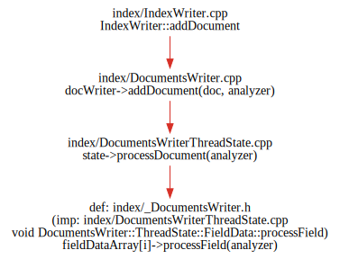
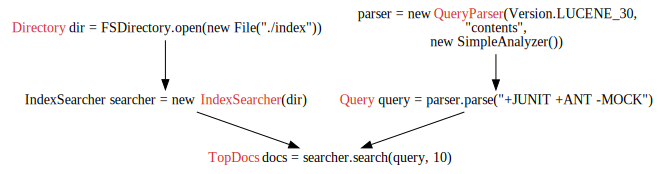
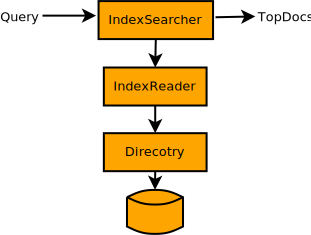
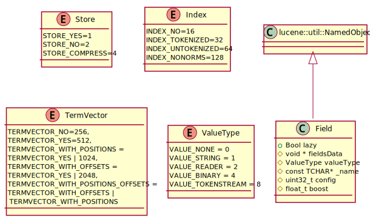
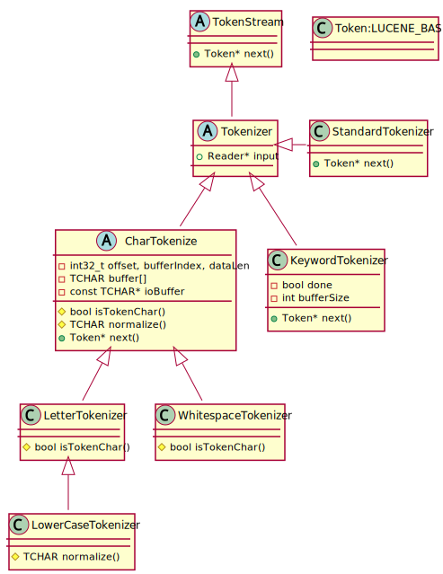
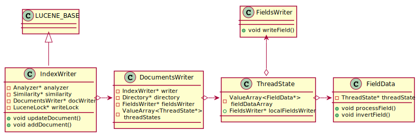
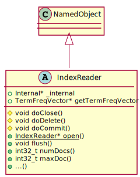

Lucene笔记
Table of Contents
CLucene代码结构
core目录示意图：

Lucene索引过程
索引过程

索引代码示意图：

索引过程：
- 抽取本文，生成document
- 分析Analysis
- 源tokens经过一系列filter的修改，构成了analyzer
- 分析过程生成了将写入索引的index流
- 生成倒排索引
代码调用过程：

invertField() 判断域是否需要分词，如果不需要则直接建立索引，否则先调用analyzer分词然后建立索引。
writeField() 将域原始内容写入索引。
索引文件结构
每份Lucene索引由多个段（segment）组成，如下图所示：
每个段是一份独立的索引，保存所有被索引文档的一个子集。当writer 刷新缓存的新写入文档和待删除文档时，生成新的段。在检索时，每个段被单独检索，所有的结果被合并返回。
每个段由多个文件组成，文件名形式为：_X.<ext>，其中X是段的名字，ext是扩展名。不同的扩展名代表索引段的不同部分。如果使用复合文件格式（compound, IndexWriter.setUseCompoundFile），则段内的大部分文件将合为一个文件，_X.cfs。这将减少检索时打开的文件描述符个数。
有一个特殊的段文件，segments_<N>，它引用所有的段。这个文件非常重要，Lucene每次首先打开它然后再打开它引用的其他段文件。值<N>称作『generation』，每次有变化提交到索引中时递增1。
随着时间增加，段的数量将不断增加。IndexWriter会周期性的选择段进行合并，并删除旧的段。
基本索引操作
- 添加文档到索引
- addDocument(Document)
- addDocument(Document, Analyzer)
- 删除文档
- deleteDocuments(Term)
- deleteDocuments(Term[])
- deleteDocuments(Query)
- deleteDocuments(Query[])
- deleteDocuments(Query[])
- deleteAll()
- 更新文档
- updateDocument(Term, Document)
- updateDocument(Term, Document, Analyzer)
更新文档实际上先删除包含Term的文档，然后再写入新的文档。不能在原有文档上更新。
域选项 Field options
索引选项indexing
索引选项控制域中的文本在倒排索引中索引方式。
- Index.ANALYZED 使用analyzer将域中的文本分成分开的词，使得每个词可以被检索
- Index.NOT_ANALYZED 索引该域，但不分析，将所有内容作为整体进行索引
- Index.ANALYZED_NO_NORMS Index.ANALYZED的变种，但是不在索引中存储归一化信息。归一化保存了索引时的加权信息，但是检索时会消耗更多内存。（LIA 2.5.3）
- Index.NOT_ANALYZED_NO_NORMS 同上
- Index.NO 该域的内容不可搜索
存储选项storing
- Store.YES 存储域，原始内容将保存在索引中，可以由IndexReader读取。适用于需要在检索结果中展示的内容，比如域名、标题等。
- Store.NO 不存储域内容
词向量选项 Term vectors
词向量是域中词项组成的向量。可以用于高亮文本，查找相似文档等。
- TermVector.YES 存储每个文档出现过的词项和出现次数，不保存位置和偏移信息
- TermVector.WITH_POSITIONS 存储每个文档出现过的词项，出现次数，和每个词出现的位置
- TermVector.WITH_OFFSETS
存储每个文档出现过的词项，出现次数，和每个词出现时的偏移信息（开始和结束字符的位置）。
偏移和位置有什么区别？
- TermVector.WITH_POSITIONS_OFFSETS 存储每个文档出现过的词项，出现次数，位置和偏移信息
- TermVector.NO 不保存词向量
只有Index.YES时才能设置TermVector.YES。
为文档和域加权 boosting
可以对文档和域进行加权，分为索引时和检索时加权。
文档加权
doc.setBoost(1.5F)
域加权
Field.setBoost(1.2F);
Norms
在索引时，文档每个域的所有加权会合并成一个float数字。每个域的所有加权会被编码成一个字节，在检索时被检索的域的norms会加载到内容中，解码成单精度数，在计算相关度时使用。
Lucene检索过程
检索代码示意

- 解析查询

上面的图示中从Direcotry直接创建IndexSearcher，然后执行搜索。实际上IndexSearcher通过IndexReader与索引交互，完整的过程是：
IndexReader reader = IndexReader.open(dir); IndexSearcher searcher = new IndexSearcher(reader);
检索过程主要类的关系如图所示：

如果没有主动创建IndexReader，使用Directory创建IndexSearcher，则IndexSearcher会新建自己私有的IndexReader。
Dirctory 类提供了抽象的类文件API，IndexReader使用这个API与索引文件交互。
Lucene打分过程
下面是Lucene的相似度打分公式，用来计算查询q中所有词t与文档d的相似度分数：
\[ \sum_{t\ in\ q}\Big( tf(t\ in\ d) \times idf(t)^2\times boost(t.field\ in\ d)\times lengthNorm(t.field\ in\ d) \Big)\times coord(q,d)\times queryNorm(q) \]
详见LIA 2e Chapter 3.3.
Lucene的多种查询方式
TermQuery
TermRangeQuery
NumericRangeQuery
PrefixQuery
BooleanQuery
PhraseQuery
WildcardQuery
FuzzyQuery
MatchAllDocsQuery
Lucene分析过程 analysis
高级搜索技术
扩展搜索
类
document
Field
域Field是文档Document的一节，每个Field包含两部分，名称name和值value。域可以是以String或Reader方式提供的文本，或是原子化的关键词。这些关键词可以表示日期，url等。Field可以保存在索引index中，这样它们有可能在查询时被命中。

- Enum说明
- Store
- STORE_YES：存储原始内容，不解析
- SOTRE_NO：不存储内容
- STORE_COMPRESS=4：以压缩后的形式存储域的内容，特别适用于长文档和值为二进制的域
- Index
- INDEX_NO=16：不索引该域，不能搜索，但如果STORE_YES仍可以获得该域内容
- INDEX_TOKENIZED=32：使用analyzer分析该域，并索引
- INDEX_UNTOKENIZED=64：不使用analyzer，并索引，适合查询唯一的Id如产品编号
- INDEX_NONORMS=128：索引，但不使用analyzer，并且不存储归一因子（norm）。
- 没有norm意味着不进行索引时提权和域长度归一化
- 优点是内存占用更小，因为对索引中文档的每个索引域需要一个字节来存储norm
- 如果开始建立索引时存储了norm，那么以后禁止norm将无效；也就是说如果要NO_NORMS生效，这个域的所有实例必须在最开始就使用NO_NORMS
- 没有norm意味着不进行索引时提权和域长度归一化
- TermVevtor
- TERMVECTOR_NO=256：不存储词向量
- TERMVECTOR_YES=512,
- 存储每个文档的词向量（term vectors）。词向量是一个列表，存储文档的词项和词项在该文档中的出现次数
- TERMVECTOR_WITH_POSITIONS = TERMVECTOR_YES | 1024
- 存储词向量和每个token的位置信息
- TERMVECTOR_WITH_OFFSETS = TERMVECTOR_YES | 2048
- 存储词向量和token的偏置（offset）信息
- TERMVECTOR_WITH_POSITIONS_OFFSETS = TERMVECTOR_WITH_OFFSETS | TERMVECTOR_WITH_POSITIONS
- 存储词向量+token位置+token偏置信息
- Store
- FieldSelector
FieldSelector用于决定用IndexReader加载document时，文档的哪些field被加载。

Document
文档Document是索引和检索的基本单元。一个Document由一组域构成。
Tools

analysis
Token类图：


Analyzer类图：
index
IndexWriter


store
Directory
IndexOutput/IndexInput